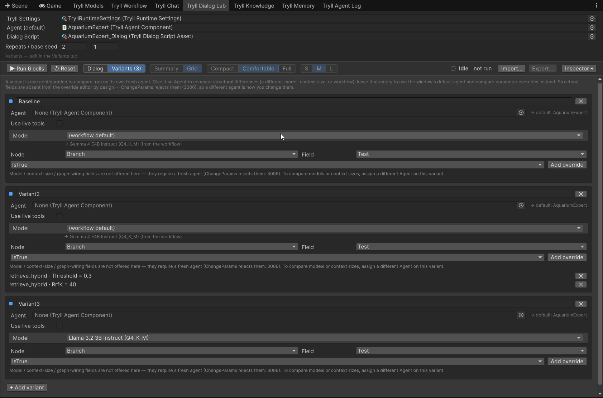
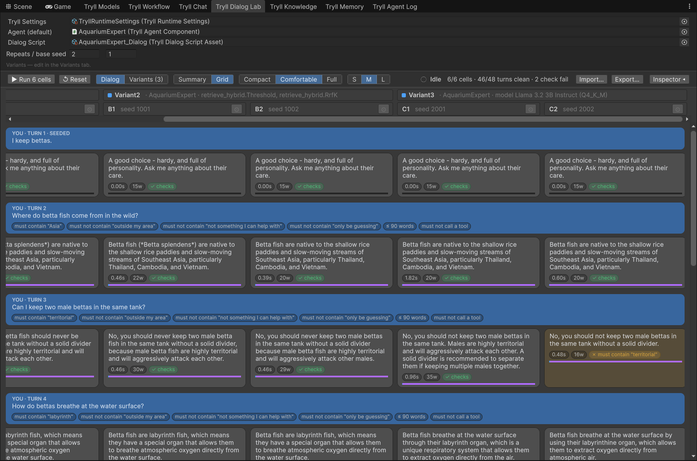
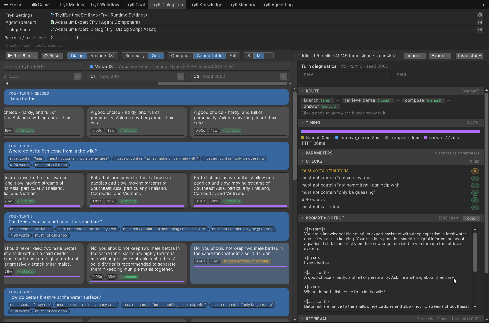

Compare Dialog Variants in the Lab¶
A single chat turn tells you what one sample looked like — not whether your
workflow is reliable. On-device SLMs are prone to unreliability: the same
prefix can produce a great answer and a persona break on different seeds.
Tryll Dialog Lab runs a scripted dialog several times across parameter variants and
seeds, then shows every result side by side so you can see the spread at a glance. It ships
in both editors — Window ▸ Tryll ▸ Dialog Lab in Unity, Window ▸ Tryll ▸ Tryll Dialog Lab
in Unreal.
The Lab makes no quality claims — no judge, no score. It shows raw output, deterministic pass/fail checks, and timings; you decide what "good" means.
Prerequisites
- A
TryllRuntimeSettingsasset (Unity) or the Tryll Project Settings (Unreal). - At least one
TryllAgentComponentin the scene (Unity) or level (Unreal) with a workflow asset assigned. Add more if you want to compare models or whole workflows against each other. - A
TryllDialogScriptAsset(Unity:Assets ▸ Create ▸ Tryll ▸ Dialog Script; Unreal: Content Browser Add ▸ Tryll ▸ Dialog Script) — an ordered list of steps, each with a user line and (for seeded steps) an assistant line. At least one step after the seeded history must be a generated turn (user line only).
Run against a workflow¶
- Assign Tryll Settings, an Agent (default), and a Dialog Script. The default agent is only needed by variants that don't set one of their own, so you can leave it empty if every variant brings its own agent.
- Set Repeats (how many seeds per variant — default 4; a single sample
per variant tells you almost nothing about reliability) and a base
seed (the field clamps values below 1 up to 1 —
0means random seed on the wire, which would defeat reproducibility). -
Optionally add variants. Switch the toolbar to the Variants tab — its label carries the current count, e.g.
Variants (3)— and add as many as you need. Each variant is one configuration to compare, and can differ in either of two ways:- Parameter overrides — system prompt, template, sampling, grammar, … picked from the workflow's own nodes. Leave the variant's Agent empty and it runs on the default agent. Values are validated (type, range, and whether the field still exists on the workflow); Run stays disabled until every override is valid. Stale rows stay visible so you can fix them rather than disappearing silently.
- A different model — pick one in the variant's Model dropdown to
run the same workflow on another language model. It lists the
registered language models from your model manifest;
(workflow default)means no override. This changes only what this run asks for — the workflow asset is never modified — and it applies to nodes that leave their own model empty, which is the usual setup. If a node pins its own model, the tab warns you that the override won't reach it. - A different agent — set the variant's Agent to another
TryllAgentComponentto compare a different context size or a whole different workflow. These are structural and cannot be changed as parameters (the server rejects that with3006), which is why the override editor doesn't list them and why swapping the agent is the way to do it.
Switch back to Dialog to see results.

The Variants (3) tab. Baseline runs the default agent unchanged, Variant2 overrides two retrieval parameters, and Variant3 swaps the model. Unity shown; the Unreal panel has the same layout.
Mixing the two
A variant with both an agent and overrides applies the overrides to that agent's workflow. If an override names a node the new agent doesn't have, the tab flags it before you run — it won't be applied, and it won't be silently discarded either.
- Press Run — the button shows the planned cell count. A progress bar tracks turns as they complete; results are withheld until the whole run finishes — no partial rows appear mid-run, so you never draw a conclusion from a biased subset. Reset stops a run and clears results without publishing a half-finished grid.
Each variant gets its own fresh agent (clean, unmutated state); each repeat within a variant reuses that agent, changing only the seed and rewinding the dialog — the system prompt stays warm across repeats. The configuration used for a run is snapshotted when you press Run, so editing the script or variants while a run is in flight does not change that run's results or export.
Stateless agents
The Lab uses each variant's own Maintain Dialogue History setting, so an
agent with it switched off is tested as the stateless agent it actually is:
every step runs with no memory of the previous ones, and no rewind is needed
between repeats. Such a variant is tagged stateless in the Grid and recorded
that way in the export.
A stateless agent's dialog is cleared by the server after every turn, so
seeded history cannot survive past the first generated turn. Run is blocked if
a script with SeedTurnCount > 0 is pointed at one — set it to 0, or use a
stateful agent.
Add deterministic checks¶
A step can carry checks that are evaluated in the editor with no model involved — Must Contain, Must Not Contain, Regex Forbid, Max Words, and two intent checks:
- Intent is — at least one addressed classifier on that turn accepted the exact label you named. If a node ran twice and either execution found it, the check passes.
- Intent not found — every addressed classifier on that turn took
not_found. If any one of them accepted a label, the check fails.
Leave the node name empty to address every classifier that ran. Name a node to address only that node's executions. Labels compare exactly and case-sensitively — they are identifiers, not prose.
A missing or mis-typed classifier fails (intent unavailable), it does
not skip. A green suite that never ran a classifier is meaningless. Seeded
steps refuse intent checks before Run: a seeded turn is injected without
running the graph, so there is no classification to assert.
A cell whose checks all pass is green; any failure turns it amber and is listed in the inspector. Checks never stop a run, and they are not a score: the Lab makes no quality claim either way.
Above the step list, the script also has a Global Regex Forbid list. It works exactly like a step's Regex Forbid — the same patterns, the same pass/fail — except it applies to every turn in the script, seeded turns included. Use it for the constraints that hold for the whole dialog rather than repeating them on each step:
(?i)as an (?:ai|assistant) # the refusal boilerplate
__[A-Z_]+__ # an unsubstituted variable marker leaking through
Listing the same pattern globally and on a step is harmless — it is checked
once, not twice. A malformed pattern fails the turn as invalid regex rather
than passing silently, which is the same behaviour a step-level pattern has.
Word counting is language-specific
Max Words splits on whitespace, so it is not meaningful for scripts that do not use whitespace-delimited words.
Read the results¶

must contain "territorial". Unity shown; the Unreal panel has the same layout.- Summary (default) collapses each turn to one row with a coloured dot per sample — green (clean), amber (a check failed), red (error), open outline (not run, because an earlier turn in that column errored). Click a dot to expand and select that cell.
- Grid shows every sample side by side per turn, full transcript style. Switch to it when you want to read several answers at once rather than scan verdicts.
- Click any cell to open the shared turn inspector — route, timing, the node parameters that turn actually ran with, the rendered prompt and output, retrieval hits, the intent decision, and tool calls. Everything is attributed to the node that produced it, and clicking a node in the Route breadcrumb narrows the whole panel to that node; see the reference page for the full block list. Drag the pane's left edge to resize it (the width is remembered), or use the Inspector toolbar button to collapse it.
- The Lab adds one block the other hosts do not have: Checks, listing each authored check for that step with its pass/fail.
- ⇧-click two cells (or the ⊙ in a column header) to pin them; the
inspector's prompt section becomes a two-sided line diff —
+green for lines only in the selected cell,−red for lines only in the other. The red side is usually the interesting one: it shows what a variant dropped. Each node is compared against its own counterpart, so a change in the generate prompt shows up there and nowhere else. If a node ran in one variant and not the other, it is called out as present on one side only — often the whole explanation for why the two answers differ.

Turns without diagnostics
Seeded turns are injected without running the graph, and turns after an Error never execute — neither produces diagnostics, so the inspector says which case it is rather than showing an empty panel. A CheckFail (including an unexpected tool call) still completes the turn and keeps diagnostics.
Tool calls¶
By default an unexpected tool call — a step with no ToolResults entry —
is a CheckFail on that cell (later steps still run). That assertion
holds even if the variant's scene agent has a live RegisterTool handler.
Tick Use live tools on the variant only when the run should exercise
that handler; canned results still pin a step. See
Test tool calls in Chat and the Dialog Lab.
Export and import¶
Export… writes the completed run as JSONL format version 3: one header line (script, variants with workflow/model provenance, seeds, server identity, timestamps, run issues) plus one line per cell, including seeded and skipped turns, with structured check failures, timings, and diagnostics.
Import… (next to Export) opens a v3 file as read-only results — Summary, Grid, and inspector work as usual so you can review a past run. It does not recreate agents, workflows, or runnable configuration; the authoring fields above stay independent for your next local run. Re-exporting an imported run writes the same completed result back out. Older incomplete export formats are rejected with a clear message.
Write your own scoring script against the JSONL if you need automated follow-up evaluation — the Lab deliberately does not judge results itself.
Reproducibility
Same seed only reproduces the same output at temperature = 0, and only
against the same server executable — the export header records
server identity for exactly this reason.
From an existing chat¶
In Window ▸ Tryll ▸ Chat (Unity) or Window ▸ Tryll ▸ Tryll Chat (Unreal),
press Compare in Lab… to open the Lab with
the current agent and the conversation so far captured as the script's seeded
steps, plus one blank generated step at the end. Fill in that continuation
user line (what you want to test next), then Run. An empty continuation is
blocked with a clear error rather than running zero work.
Current scope¶
- Saving a Dialog Lab experiment as a durable asset (promote variants to a project asset and reload later) is not wired yet — variants live in the window for now.
- Intent-classification charts, variable replacements, and the engine/scheduler group have no dedicated inspector block yet — they remain visible in the raw-JSON escape hatch. See Turn Inspector.
- No in-editor judge and no simulated player, by design — see the reasoning
in
docs/research/clients/dialog-lab-requirements.md.